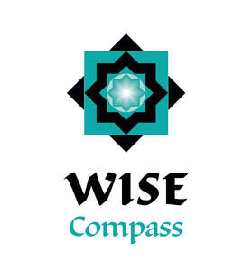

Trade Mark Journal No.2026/006 6 February 2026
UK00004329143 23 January 2026 (9,16,35,41)

- Class 9
- Audio books; Talking books; Downloadable series of children’s books; Downloadable electronic books.
- Class 16
- Books; Non-fiction books; Fiction books; Series of non-fiction books; Comic books; Writing books; Manuscript books; Books for children; Copy books; Printed books; Covers for books; Series of fiction books; Coloring books; Educational books; Fantasy books; Autograph books; Story books; Wirebound books; Colouring books; Hymn books; Travel books; Painting books; Baby books [storybooks]; Picture books; Gift books; Cook books; Drawing books; Guide books; Poster books; Commemorative books; Information books; Religious books; Prayer books; Sticker books; School writing books; Song books; Manga comic books; Activity books; Children's books; Baby books; Sketch books; Pop-up books; Binding materials for books and papers; Pocket books [stationery]; Books featuring fantasy stories; Novels; Graphic art books; Books featuring fictional stories.
- Class 35
- Online retail services relating to toys; Online retail store services relating to clothing; Retail services relating to clothing; Retail services in relation to toys; Retail services connected with stationery; Retail services in relation to downloadable electronic publications; Advertising services relating to books; Online retail services for downloadable digital music; Retail services in relation to downloadable music files; Retail services relating to bakery products; Retail services relating to furniture; Retail services in relation to pet products; Retail services in relation to smartphones; Retail services in relation to safes; Retail services in relation to foodstuffs; Online retail store services in relation to clothing; Retail services in relation to pharmaceutical preparations.
- Class 41
- Education; Pre-school education; Education and instruction; Services of schools [education]; Education services; Religious education; Education (Religious -); Education and training services; Kindergarten services [education or entertainment]; Providing of education; Entertainment, education and instruction services; Education academy services for teaching languages; Primary education services; Online education services; Education services related to the arts; Education information services; Education services for imparting language teaching methods; Secondary school educational services; Education, entertainment and sport services; Educational and teaching services; Education, entertainment and sports; Education services relating to conservation; English language education services; Organization of competitions [education or entertainment]; Competitions (Organization of -) [education or entertainment]; Organization of competitions for education or entertainment; Foreign language education services; Publishing of books; Publishing of books, magazines; Publication of books; Books (Publication of -); Publishing of books and reviews; Loaning of books; Lending of books and other publications; Publishing of instructional books; Lending of books and periodicals; Publication of music books; Loans of books; Lending of books; Publication of audio books; Publication of books, reviews; Publishing services for books and magazines; Publication of books, magazines, almanacs and journals; Publication of educational books; Rental of books; Lending libraries for books; Publication of text books; Publishing services for books; Multimedia publishing of books; Hire of books; Services for the publication of books; Online electronic publishing of books and periodicals; Publishing of electronic books and journals online; Publishing of electronic books and journals on-line; Publishing of journals, books and handbooks in the field of medicine; Publication of year books; Online publication of electronic books and journals; Publication of electronic books and journals online; Electronic online publication of periodicals and books; On-line publication of electronic books and journals; Publication of electronic books and journals on-line; Library services for the exchanging of books; Providing online non-downloadable comic books and graphic novels; Rental of audio books; Lending of books relating to computers; Library services for the lending of books; Book publishing; Publication of electronic books and periodicals on the Internet; Services for the publication of guide books.
Wise Compass Limited